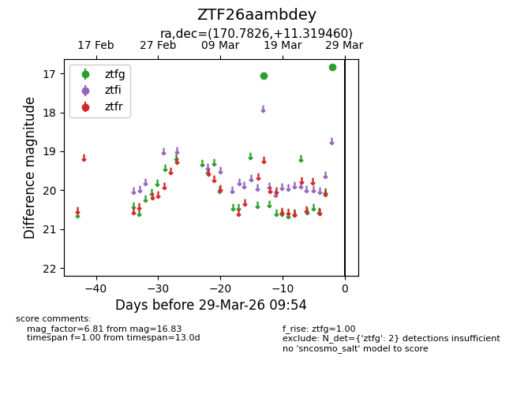
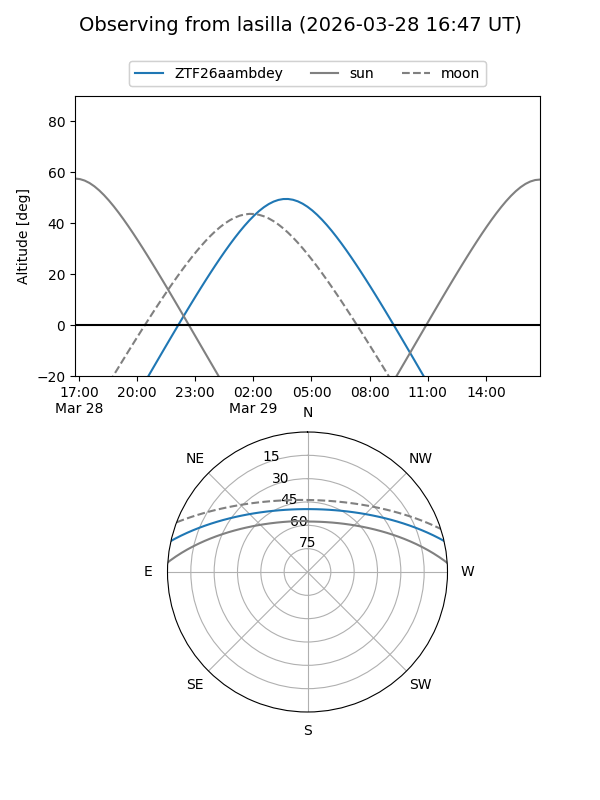
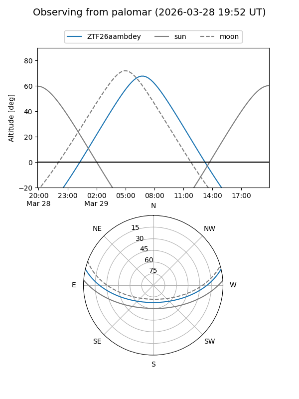

ZTF26aambdey
Target ZTF26aambdey at 2026-03-29 09:57
Aliases and brokers:
FINK: link
Lasair: link
ALeRCE: link
alt names
ZTF26aambdey (ztf,fink_ztf)
Coordinates:
equatorial (ra, dec) = 170.7826,+11.31946
equatorial (HMS+DMS) = 11:23:07.83,+11:19:10.05
galactic (l, b) = (245.9662,+63.92142)
Flags:
Photometry:
last ztfg=16.83
2 ztfg detections
Lightcurve

Visibility


Additional plots